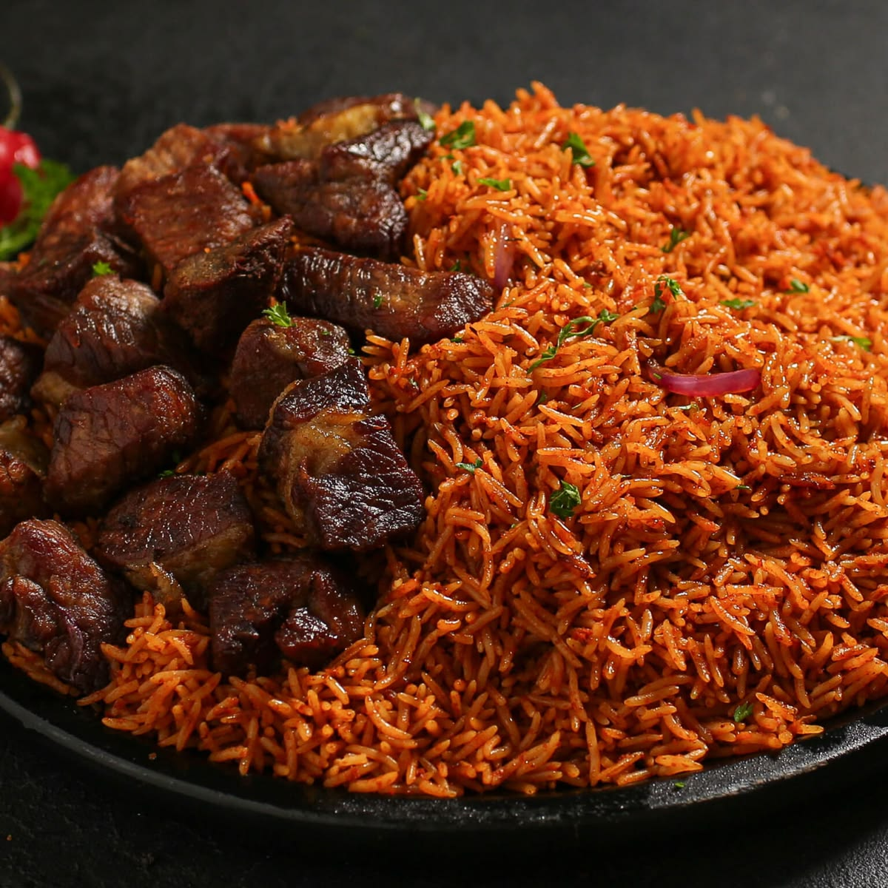

Jollof Rice is one of Nigeria's most beloved dishes, known for its rich, smoky flavour and vibrant red colour. Cooked in a well-seasoned tomato and pepper base, this one-pot rice dish is a staple at every Nigerian party, family gathering, and celebration. Whether served with fried chicken, beef, or fish, a plate of Nigerian Jollof Rice never disappoints.